实验思考题
Thinking 1.1
Q： 请查阅并给出前述 objdump
中使用的参数的含义。使用其它体系结构的编译器（如课程平台的 MIPS
交叉编译器）重复上述各步编译过程，观察并在实验报告中提交相应的结果。
A：
objdump命令的常用参数有以下几个
| 参数 | 含义 |
|---|---|
| -d | 将代码段反汇编 反汇编那些应该还有指令机器码的section |
| -D | 与 -d 类似，但反汇编所有section |
| -S | 将代码段反汇编的同时，将反汇编代码和源代码交替显示，源码编译时需要加-g参数，即需要调试信息 |
| -C | 将C++符号名逆向解析 |
| -l | 反汇编代码中插入源代码的文件名和行号 |
| -j | section: 仅反编译所指定的section，可以有多个-j参数来选择多个section |
因此，指导书上的objdump -DS [executable file]这一命令中-DS表示将所有的section反汇编，并将反汇编代码和原码交替显示。
我们使用MIPS交叉编译器重复指导书上的编译过程——
- 我们先新建一个C文件main.c
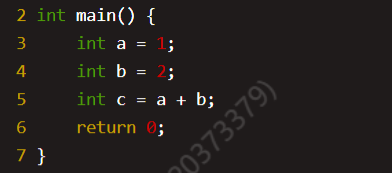
-
然后使用交叉编译器mips_4KC-gcc将该文件编译成main.o文件,然后用mips_4KC-objdump将其反汇编。
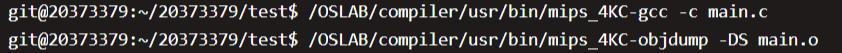
- 反汇编结果如下所示（截取部分）
main.o: file format elf32-tradbigmips
Disassembly of section .text:
00000000 <main>:
0: 27bdffe0 addiu sp,sp,-32
4: afbe0018 sw s8,24(sp)
8: 03a0f021 move s8,sp
c: 24020001 li v0,1
10: afc20010 sw v0,16(s8)
14: 24020002 li v0,2
18: afc2000c sw v0,12(s8)
1c: 8fc30010 lw v1,16(s8)
20: 8fc2000c lw v0,12(s8)
24: 00621021 addu v0,v1,v0
28: afc20008 sw v0,8(s8)
2c: 00001021 move v0,zero
30: 03c0e821 move sp,s8
34: 8fbe0018 lw s8,24(sp)
38: 27bd0020 addiu sp,sp,32
3c: 03e00008 jr ra
40: 00000000 nop
...Thinking 1.2
Q： 也许你会发现我们的 readelf
程序是不能解析之前生成的内核文件 (内核文件是可执行文件)
的，而我们刚才介绍的工具 readelf
则可以解析，这是为什么呢?(提示：尝试使用
readelf -h，观察不同)
A：
我们使用readelf -h分别查看testELF和vmlinux的文件头
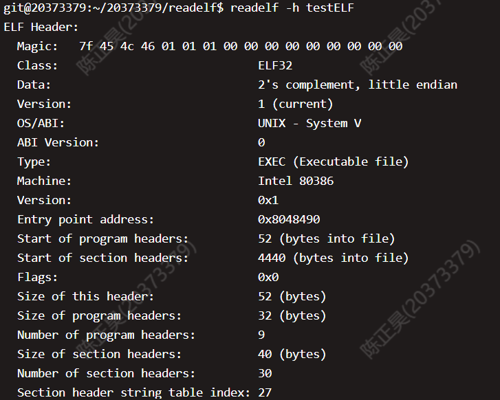
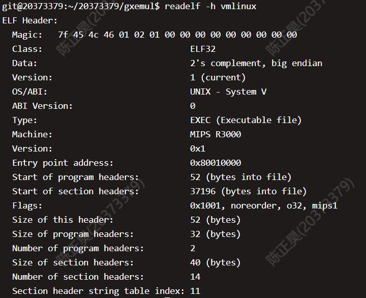
可以发现，testELF文件是小端储存，而vmlinux是大端储存。因为我们写的readelf不能读取大端存储的数据，所以无法解析vmlinux。
Thinking 1.3
Q： 在理论课上我们了解到， MIPS
体系结构上电时，启动入口地址为0xBFC00000（其实启动入口地址是根据具体型号而定的，由硬件逻辑确定，也有可能不是这个地址，但一定是一个确定的地址），但实验操作系统的内核入口并没有放在上电启动地址，而是按照内存布局图放置。思考为什么这样放置内核还能保证内核入口被正确跳转到？
A：
因为我们在scse0_3.lds中设置好了各个节被加载的位置，即最终的segment地址，同时使用了ENTRY(_start)指定了程序入口（即内核入口），最终保证了内核入口能够被正确跳转。
Thinking 1.4
Q： sg_size 和 bin_size
的区别它的开始加载位置并非页对齐，同时 bin_size
的结束位置（va+i）也并非页对齐，最终整个段加载完毕的
sg_size
末尾的位置也并非页对齐，请思考，为了保证页面不冲突（不重复为同一地址申请多个页，以及页上数据尽可能减少冲突），这样一个程序段应该怎样加载内存空间中。
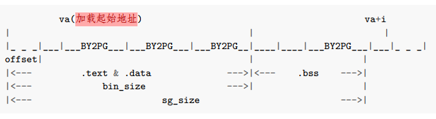
A：
加载前先检查，当程序运行到该页面时，再把该页面加载到相应位置。
Thinking 1.5
Q：
内核入口在什么地方？main函数在什么地方？我们是怎么让内核进入到想要的main函数的呢？又是怎么进行跨文件调用函数的呢？
A：
内核入口的起始地址是_start的地址（因为在linker script中用ENTRY()指定了），main函数是在start.S中跳转的地址。这两个地址可以通过反汇编vmlinux获知。
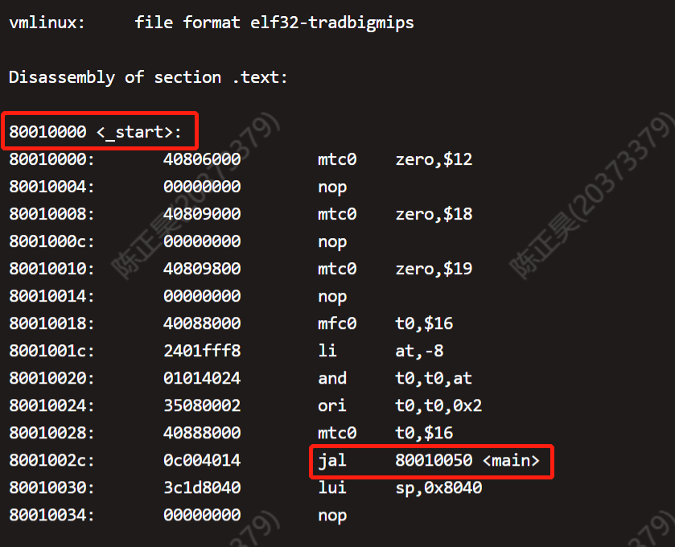
由上图可知，内核入口地址是0x80010000，
main函数地址是0x80010050
本实验中是通过start.S中使用jal指令跳转到main函数的。跨文件调用是通过跳转指令实现的，在调用函数之前还需将数据存入栈中。
Thinking 1.6
Q： 查阅《See MIPS Run Linux》一书相关章节，解释
boot/start.S 中下面几行对 CP0
协处理器寄存器进行读写的意义。具体而言，它们分别读/写了哪些寄存器的哪些特定位，从而达到什么目的？
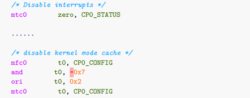
A：
-
mtc0 zero, CP0_STATUS主要是用来将CPO的12号寄存器（即SR寄存器）设置为0，此时全局中断能位IE的值也是0,全局中断使能失效，CPU不对中断进行响应.
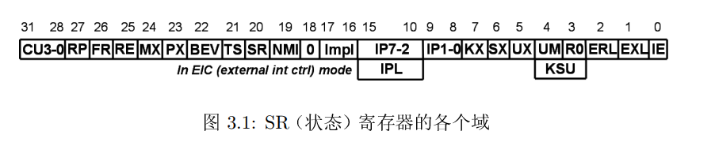
-
下面4行代码主要是对CP0的16号寄存器（即Config寄存器）进行操作。使用and和ori指令将该寄存器的K0域（0-2位）域设置为0b010，目的是禁止固定的kseg0经过高速缓存。
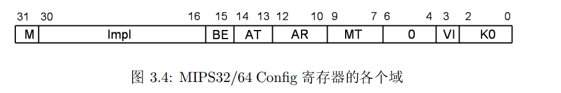
实验难点图示
我认为该实验的难点主要包含以下两个难点——
-
如何使用指针来获取ELF文件中各个section和segment中的数据
- printf实现逻辑的梳理
### ELF的解析
在这一部分中，我们需要熟悉ELF文件的基本结构，尤其是下面这个图——
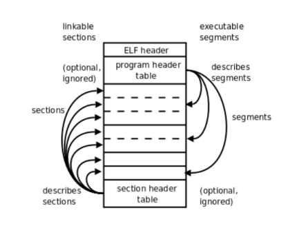
此外，我们需要学会通过ELF手册来获知各个结构体的内部数据，最后通过指针来将数据获取。无论是解析section还是解析segment，我们都需要从文件头中获得section header table或者segment header table的位置。
以segment为例，我们需要先从
文件头结构体（ELF header）
中获得段表（sgement header table）与文件头的偏移e_phoff，然后让文件头地址bineary与之相加就可以得到段表的位置了。此外，我们还能在文件头结构体中获得每个segment的大小（e_phentsize）和segment的总数量（e_phnum）,然后我们就可以通过指针的移动来遍历所有的segment了。
具体的实现方法有以下两种——
Elf32_Phdr *phdr = null;
ptr_ph_table = binary + ehdr -> e_phoff; //ptr_ph_table是u_char*类型
ph_entry_count = ehdr -> e_phnum;
ph_entry_size = ehdr -> e_phentsize;
//第一种：指向段表指针的移动
for (Nr = 0; Nr < ph_entry_count; Nr++) {
shdr = (Elf32_Phdr*)(ptr_ph_table + Nr * ph_entry_size);
printf("%d:0x%x\n", Nr, shdr->sh_addr);
}
//第二种：将段表作为数组访问
shdr = (Elf32_Phdr*)ptr_ph_table;
for (Nr = 0; Nr < ph_entry_count; Nr++) {
printf("%d:0x%x\n", Nr, shdr[Nr].sh_addr);
}printf实现逻辑
我们的printf()函数是通过调用print.c文件中定义的的lp_Print()函数来实现打印的功能——
Pvoid printf(char *fmt, ...) {
va_list ap;
va_start(ap, fmt);
lp_Print(myoutput, 0, fmt, ap);
va_end(ap);
}这个
lp_Print()函数实现了printf的核心逻辑，虽然函数很长，但是逻辑并不复杂。实际上就是，遍历一遍格式字符串fmt，如果没有遇到\0或者%就直接打印到终端，如果遇到%就按照%[flags][width][.precision][length]specifier的形式进行输出格式的解析，并以这种输出格式打印从可变参数列表获得的参数；如果遇到\n就结束整个打印过程。具体流程如下图所示——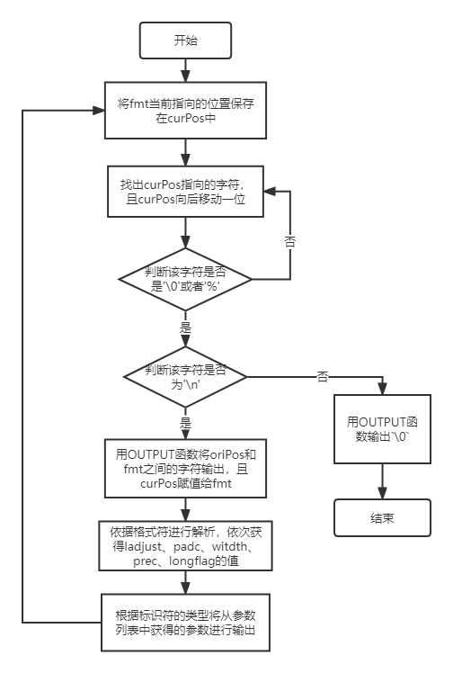
体会与感想
Lab1主要让我们学习操作系统启动的基本流程、掌握ELF文件的结构和功能，以及最终完成一个printf函数的书写。本次Lab花费时间大约为10个小时，大多数时间都花在阅读源代码和思考源代码的逻辑上。由于完成每个功能依赖的代码文件不止一个，而且在vim中阅读代码终归不如在vscode等图形化编辑器上方便，因此给代码阅读和理解带来了不小的麻烦。此外，课程组提供的源代码中大量使用了“指针”，也给代码的理解带来了一定的困难。
但是，当我真正的读懂所给代码的逻辑并完成练习，尤其是当我看到printf函数可以正常运行时，那种成就感和快乐感是无法用言语来形容的。从一开始“不识庐山真面目”，到最终“柳暗花明又一村”，这大概就是操作系统的魅力吧！